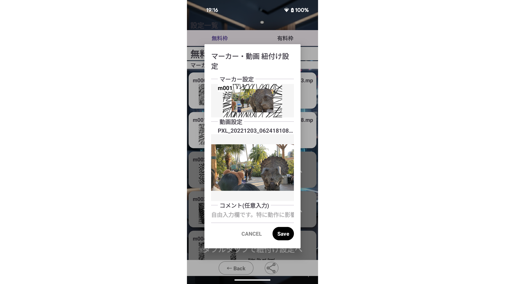
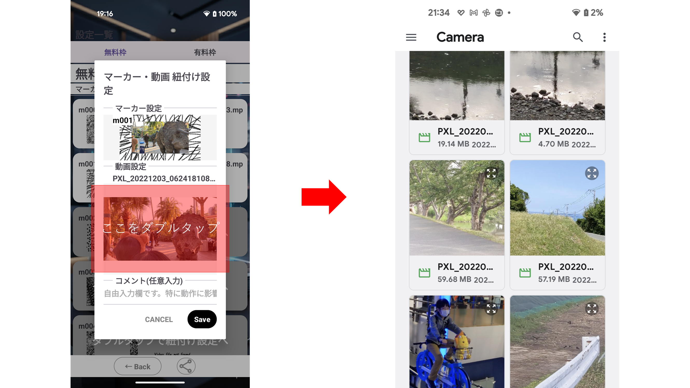
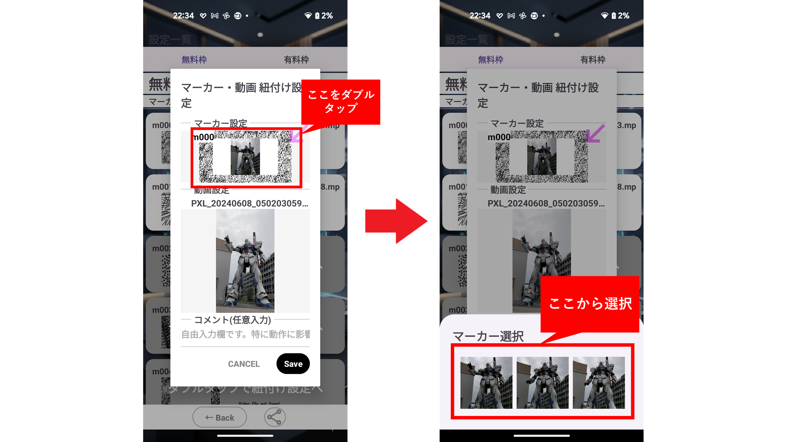
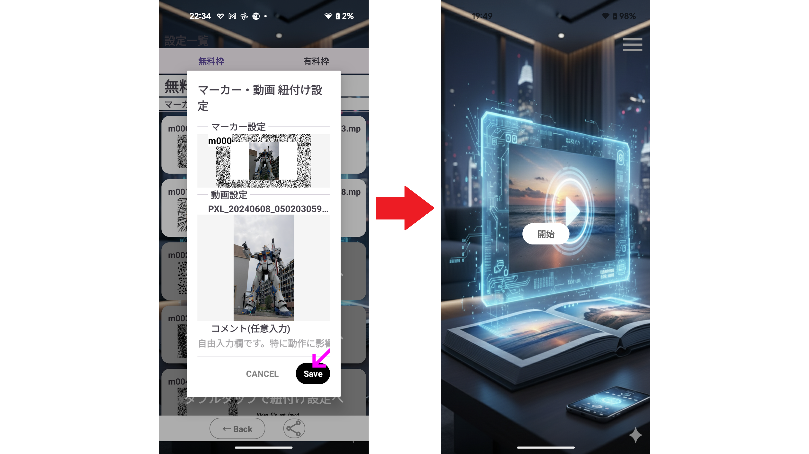

アプリ概要
VideoPhotoBookは、設定したARマーカーを検知すると、そのマーカー上に選択した動画を表示・再生するARアプリです。設定画面とAR実行画面の2画面で構成されます。
設定画面
ARマーカーと再生する動画の紐付けを設定します。スマホ内の任意の動画を選択可能です。
AR実行画面
設定済みのARマーカーを探して検知すると、マーカー上に動画を表示します。ダブルタップで全画面表示に切り替えます。
使い方（ステップガイド）
以下の手順に沿って設定すると、AR上で動画が再生されます。
1. 設定画面
設定画面で、ARマーカーと再生する動画の紐付け一覧が表示されます。
左がマーカー、右が動画です。
2. 紐付けダイアログ表示
設定画面のリストでアイテムをダブルタップすると、紐付けダイアログが表示されます。この画面でARマーカーと動画の紐付け設定を行います。
3. 再生する動画を設定
先に動画を設定してください。動画を設定することでARマーカーも自動で設定されます。※著作権はご自身で解決済の動画をご利用ください。本アプリは関知しません。
手順4でARマーカーを設定しますが、デフォルトのままでよければ、手順5に進んでください。
4. ARマーカーを設定
ARマーカーは動画を設定すると自動で設定されますが、別のマーカーに変更することもできます。
5. 保存
保存してダイアログを終了します。
7. Scan開始
AR実行画面では、設定画面で指定したARマーカーをScanします。
マーカーのScanに成功すると、マーカー上で動画を再生します。
以上です。お疲れ様でした。
Q&A（よくある質問）
Q: 動画の形式は何でも再生できますか？
A: 端末とアプリで再生可能な一般的なフォーマット（例：MP4）を推奨します。再生不可の場合は他形式に変換してください。
Q: ARマーカーはオリジナルに変更できますか？
A: マーカー枠の形状や比率の変更はできません。アプリはその枠を検知して動画再生します。枠内の画像は自由に変更できます。
Q: ARマーカーの上限数はいくつですか？
A: 10マーカーです。それ以上の設定が出来るように鋭意開発中です。
Q: 複数の動画を同時に再生できますか？
A: 複数マーカーを検知した場合はタップで切り替え可能ですが、同時再生は行いません。要望があれば開発の可能性はありますが今のところ予定はありません。
Q: 動画の全画面表示はできますか？
A: 可能です。再生中の動画をダブルタップすることで全画面と標準画面を切り替えます。
Q: プライバシーやデータの扱いは？
A: 端末内の動画選択のみで、クラウド送信はしません。詳細はプライバシーポリシーをご参照ください。